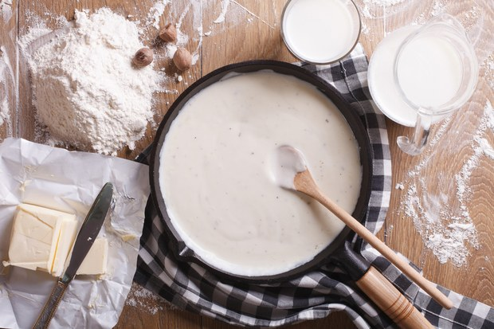

Bechamel Sauce
Bechamel is the basic white sauce, the base for sauces such as Alfredo sauce. It is simple to make and can be turned into any kind of cream sauce you want. This particular recipe is from here.
Ingredients
- 2T (30ml) butter
- 2T (30ml) flour
- 1 1/4 cups (312 ml) milk
- Salt and pepper
Method
- Heat the milk in the microwave or a pan until it is nearly boiling.
- Melt the butter in a heavy-bottomed saucepan.
- Stir in the flour and cook, stirring constantly, until the paste cooks and bubbles a bit, but don't let it brown — about 2 minutes.
- Add the hot milk, continuing to stir as the sauce thickens. Bring it to a boil.
- Add salt and pepper to taste, lower the heat, and cook, stirring for 2 to 3 minutes more.